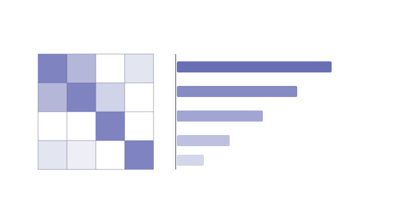

Problem
Which factors are most strongly associated with a film’s gross revenue? The dataset contained mixed data types requiring cleaning and transformation before analysis.
Approach
- Cleaned and explored a movie industry dataset
- Converted string/categorical values to numeric formats
- Computed correlations and visualised relationships with revenue
Result
Identified the features most correlated with gross revenue, with clear visualisations supporting the findings — a practical example of exploratory data analysis end to end.
Stack
- Python
- Pandas
- Jupyter Notebook
Feature engineering
Real-world datasets rarely arrive analysis-ready. Converting categorical string fields (genres, ratings, release information) into numeric representations was essential before correlation analysis could produce meaningful results.